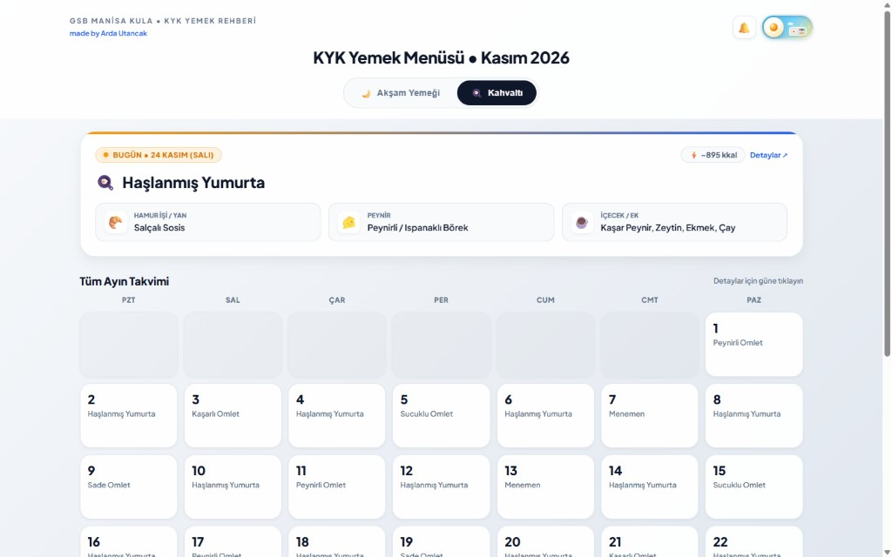

Mobil ÖncelikliKYK Yemek Portalı & Kalori Takibi
Yurt ağlarındaki düşük bant genişliğinde dahi anında yüklenen, öğrencilerin günlük ve aylık menülere tek ekranda eriştiği hafif arayüz.
- Kahvaltı ve akşam yemeği sekmelerinde tek dokunuşla gün bazlı menü ve kalori özeti
- Düşük ağ gecikmesi için hafif DOM yapısı ve mobil öncelikli erişilebilir kart düzeni